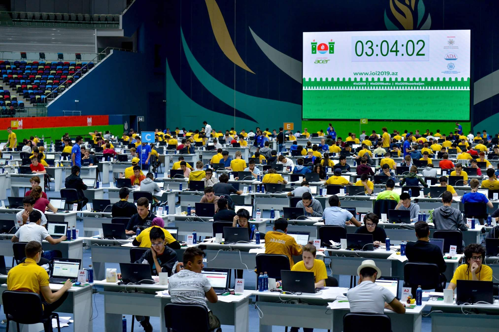
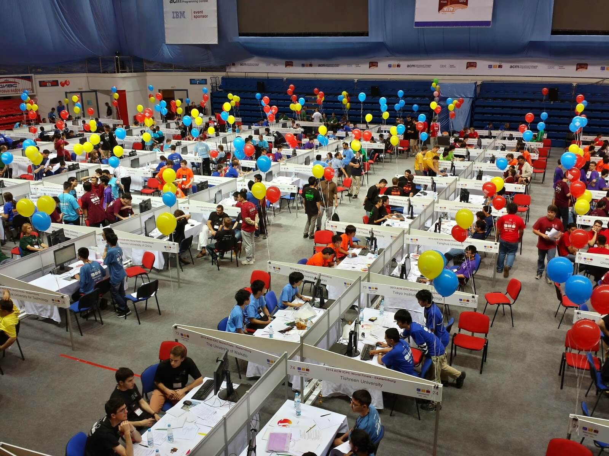

প্রোগ্রামিং নিজে যেমন একটি আশ্চর্যজনক বিষয়, ঠিক তেমনি কম্পিটিটিভ প্রোগ্রামিং বা প্রতিযোগিতামূলক প্রোগ্রামিং হলো প্রোগ্রামিংয়েরই একটি আশ্চর্য জগৎ। কম্পিটিটিভ প্রোগ্রামিং বর্তমানে বাংলাদেশে প্রোগ্রামিং বিপ্লব শুরু করে দিয়েছে। আগে বাংলাদেশে এই প্রোগ্রামিং সম্পর্কে জানত শুধু টেকনিক্যাল লাইনের মানুষজন। কিন্তু এই কম্পিটিটিভ প্রোগ্রামিং এর বদৌলতে আজ প্রাইমারি স্কুলের বাচ্চারাও প্রোগ্রামিং সম্পর্কে জানতে পারছে। এছাড়া এখন প্রোগ্রামিং বিষয়ক চাকরিগুলোতে জনবল নিয়োগের সময় কম্পিটিটিভ প্রোগ্রামিংকে অনেক গুরুত্ব দেয়া হয়। তাই কম্পিটিটিভ প্রোগ্রামিং এর গুরুত্ব অনেক।
কম্পিটিটিভ প্রোগ্রামিং কি?
কম্পিটিটিভ প্রোগ্রামিং এর অনেক নাম রয়েছে। যেমনঃ প্রতিযোগিতামূলক প্রোগ্রামিং, স্পোর্ট প্রোগ্রামিং ইত্যাদি। “কম্পিটিটিভ প্রোগ্রামিং” না বলে এটাকে “প্রোগ্রামিং প্রতিযোগিতা” বললেই হয়তো অনেকের সুবিধা হবে। তো প্রোগ্রামিং প্রতিযোগিতা হচ্ছে এমন একধরনের প্রতিযোগিতা যেখানে প্রোগ্রামাররা তাদের প্রোগ্রামিং স্কিল ব্যবহার করে একে অপরের সাথে প্রতিযোগিতা করে। কিন্তু এর মানে এই না যে কোনো একটি প্রোগ্রামিং ল্যাঙ্গুয়েজে দক্ষ হলেই এই প্রতিযোগিতায় ভালো করা যাবে (তাহলে তো এর নাম হতো “প্রোগ্রামিং ল্যাঙ্গুয়েজ প্রতিযোগিতা”!)। আসলে প্রোগ্রামিং প্রতিযোগিতার মাধ্যমে এটা দেখা হয় যে, প্রোগ্রামিং করে কে কত দ্রুত কতটা সমস্যার সমাধান করতে পারে। স্কুল কলেজের পরীক্ষার মতো এটাও এক ধরনের পরীক্ষা, কিন্তু এই পরীক্ষায় সরাসরি বই থেকে প্রশ্ন করা হয় না। একটা প্রোগ্রামিং প্রতিযোগিতার বিচারকেরা অনেক সময় নিয়ে এক একটি সমস্যা তৈরি করেন। তাই কোড মুখস্থ করে এই প্রতিযোগিতায় ভালো করা যায় না।
কেন করবে কম্পিটিটিভ প্রোগ্রামিং?
ধরো তুমি ভবিষ্যতে একজন প্রোগ্রামার হতে চাও। এখন ধরো তুমি একটা ওয়েবসাইট বানাবে যেটাতে একসাথে ১ কোটি মানুষ অনলাইনে যুক্ত হওয়ার সম্ভাবনা রয়েছে। এখন ওয়েবসাইটটা বানানো তো তোমার কাছে ডালভাত মনে হতে পারে। কিন্তু এই বিপুল পরিমাণ ট্রাফিক সামলানোর ক্ষমতা তোমার ওয়েবসাইটের নেই। তখন এই ট্রাফিক সামলানো তোমার কাছে হবে একটি চ্যালেঞ্জ বা সমস্যা। আর তখন তোমার কাজ হবে এই সমস্যা সমাধান করা। অর্থাৎ তুমি যদি প্রোগ্রামিং নিয়ে ক্যারিয়ার গড়তে চাও তাহলে তোমাকে এরকম বিভিন্ন সমস্যা সমাধানে পটু হতে হবে। শুধু প্রোগ্রামিং ক্যারিয়ারেই নয় বরং আমাদের জীবনের প্রতিটি ক্ষেত্রেই আমাদেরকে বিভিন্ন সমস্যা সমাধান করতে হয়। ঠিক এই সমস্যা সমাধানের মানসিকতাটাই আমাদের মাঝে তৈরি করে কম্পিটিটিভ প্রোগ্রামিং। আর এজন্যই কম্পিটিটিভ প্রোগ্রামিং চর্চা করা উচিত।
বিভিন্ন প্রোগ্রামিং প্রতিযোগিতা
আইওআই (IOI)
আইওআই (IOI - International Olympiad in Informatics) হলো স্কুল কলেজের শিক্ষার্থীদের জন্য আয়োজিত সর্ববৃহৎ আন্তর্জাতিক প্রোগ্রামিং প্রতিযোগিতা। এটি একেক বছর একেক দেশে আয়োজিত হয়। আইওআই -এ অংশগ্রহণের জন্য প্রতিটি দেশ তাদের সেরা কম্পিটিটিভ প্রোগ্রামারদের দল পাঠায়। বাংলাদেশ দল সিলেকশন হয় বিডিওআই (BdOI - Bangladesh Olympiad in Informatics) এর মাধ্যমে। প্রথমে বিডিওআই এর আঞ্চলিক পর্ব হয় বিভাগীয় শহরগুলোতে। আঞ্চলিক পর্বের বিজয়ীদের নিয়ে হয় জাতীয় পর্ব। জাতীয় পর্বের টপ পারফর্মাররা পায় আইওআই -এ অংশগ্রহণের সুযোগ। এ পর্যন্ত আইওআই -এ বাংলাদেশের সেরা অর্জন ২০০৯ সালে আবিরুল ইসলাম এবং ২০১৮ সালে তাসমীম রেজার রৌপ্য পদক জয়।
এসিএম আইসিপিসি (ACM ICPC)
এসিএম আইসিপিসি (ACM ICPC - ACM International Collegiate Programming Contest) হলো বিশ্ববিদ্যালয় পর্যায়ের ছাত্র-ছাত্রীদের জন্য আয়োজিত পৃথিবীর সর্ববৃহৎ এবং সবচেয়ে সম্মানজনক প্রোগ্রামিং প্রতিযোগিতা। এটিকে প্রোগ্রামিং বিশ্বকাপ -ও বলা যায়। এটি একটি দলভিত্তিক প্রতিযোগিতা। একটি দলে তিনজন সদস্য এবং একজন কোচ থাকেন। এই প্রতিযোগিতার জন্য দল বাছাই হয় অনেকটা বিশ্বকাপ ফুটবলের মত। প্রতিটি মহাদেশের সেরা দলগুলোকে নিয়ে চূড়ান্ত প্রতিযোগিতা (World Finals) অনুষ্ঠিত হয়। ১৯৯৮ সালের পর থেকে প্রতিবছরই বাংলাদেশ থেকে কমপক্ষে একটি করে দল এই প্রতিযোগিতার চূড়ান্ত পর্বে অংশগ্রহণের যোগ্যতা অর্জন করেছে। ২০০০ সালে বুয়েটের একটি টিম BUET Backtrackers এসিএম-আইসিপিসির ওয়ার্ল্ড ফাইনালসে ১১তম পজিশন অর্জন করে। এটাই এ পর্যন্ত এসিএম-আইসিপিসিতে বাংলাদেশের সেরা অর্জন।
অন্যান্য
এই দুটি প্রতিযোগিতা ছাড়াও বিভিন্ন দেশে বিভিন্ন সময় বিভিন্ন প্রোগ্রামিং প্রতিযোগিতা অনুষ্ঠিত হয়। জাতীয় হাইস্কুল প্রোগ্রামিং প্রতিযোগিতা, জাতীয় শিশু-কিশোর প্রোগ্রামিং প্রতিযোগিতা, আন্তঃস্কুল ও কলেজ প্রোগ্রামিং প্রতিযোগিতা, ব্যাকস হাইস্কুল প্রোগ্রামিং প্রতিযোগিতা, জাতীয় কলেজিয়েট প্রোগ্রামিং প্রতিযোগিতা ইত্যাদি হলো বাংলাদেশে অনুষ্ঠিত কিছু প্রোগ্রামিং প্রতিযোগিতার নাম।
কিভাবে শুরু করবে?
হুট করে তুমি যদি কোনো প্রোগ্রামিং প্রতিযোগিতায় অংশ নিতে যাও তবে তুমি লাস্ট হয়ে আসবে! খেলোয়াড়রা যেমন আসল খেলার আগে প্রচুর অনুশীলন করে, ঠিক তেমনি বড় বড় প্রোগ্রামিং প্রতিযোগিতায় অংশ নেয়ার আগেও আমাদেরকে প্রচুর অনুশীলন করতে হবে, হুট করে অংশ নেয়া যাবে না। অনুশীলন বলতে, পুরনো সমস্যা সমাধান করা আবার বিভিন্ন অনলাইন জাজে প্রতিযোগিতা দেয়া কিংবা সেখানকার সমস্যা সমাধান করা ইত্যাদি বোঝায়।
অনলাইন জাজ
অনলাইন জাজ এমন এক ধরনের ওয়েবসাইট যেখানে কম্পিটিটিভ প্রোগ্রামাররা বিভিন্ন সমস্যা সমাধানের মাধ্যমে অনুশীলন করতে পারে। এছাড়া এখানে বিভিন্ন প্রোগ্রামিং কনটেস্টেও অংশ নিয়ে মূল কনটেস্ট কিভাবে দিতে হয় তার অভিজ্ঞতা লাভ করা যায়।
অনলাইন জাজে একটা সমস্যার সমাধান জমা দিলে সেটা বলে দেয় সমাধানটা সঠিক কি না। এছাড়া এর বিশেষ বৈশিষ্ট্য হচ্ছে, যদি কোনো সমাধান ভুলও হয় সে এটাও বলে দেয় যে ভুল কোথায় হয়েছে! ভুলটা কি কোডের সিনট্যাক্সে হয়েছে। নাকি কোডটা বেশি মেমোরি বা টাইম নিয়েছে ইত্যাদি ইত্যাদি।
কিছু ভালো অনলাইন জাজের তালিকা
- onlinejudge.org অনুশীলন করার জন্য এটাই সবচেয়ে জনপ্রিয় অনলাইন জাজ। এখানে প্রায়ই ৫ ঘন্টার প্রোগ্রামিং কনটেস্ট হয়ে থাকে। কিন্তু এর মূল আকর্ষণ হলো এতে থাকা ৪০০০ এরও বেশি সমস্যা।
- urionlinejudge.com.br এটা একটা ব্রাজিলিয়ান অনলাইন জাজ। কিন্তু এখানে থাকা বিগিনার, ম্যাথ এবং স্ট্রিং সেকশনের প্রবলেমগুলো নতুনদের জন্য আদর্শ।
- codeforces.com এখানে প্রতি সপ্তাহে ২টি-৩টি করে কনটেস্ট হয়। এই কনটেস্টগুলো হয় আবার ডিভিশন অনুসারে। Division 2 কনটেস্ট দেয় নতুনরা, আর Division 1 কনটেস্ট দেয় অভিজ্ঞরা। আর এখানে প্রতি কনটেস্ট শেষে সবাইকে রেটিং দেয়া হয়। ঠিক ক্রিকেট ফুটবলের মত।
- codechef.com এখানে প্রতিমাসে তিন ধরনের প্রতিযোগিতা হয়। একটি ১০দিন ব্যাপি, একটি ৫ ঘন্টার আইসিপিসি স্টাইল আরেকটি ৪ ঘন্টার আইওআই স্টাইল কনটেস্ট। কনটেস্টে যারা ভালো করে তারা এখান থেকে পুরস্কারও পায়।
- atcoder.jp এখানে তিন ধরনের কনটেস্ট হয় এক সপ্তাহ (কিংবা মাস) পর পর। বিগিনার কনটেস্ট হয় নতুনদের জন্য, রেগুলার কনটেস্ট হয় একটু অভিজ্ঞদের জন্য আর গ্র্যান্ড কনটেস্ট হয় একদম অভিজ্ঞদের জন্য। এখানকার কিছু পুরোনো কনটেস্টের সমস্যা খুবই শিক্ষণীয়।
- lightoj.com এটি বাংলাদেশের প্রথম অনলাইন জাজ। এতে কিছু ভালো প্রবলেম আছে। বিশেষ করে এর ‘বিগিনার’ সেকশনের প্রবলেমগুলো নতুনদের জন্য খুবই শিক্ষণীয়।
- toph.co এটিও একটি বাংলাদেশি অনলাইন জাজ। এতে ইংরেজি ভাষার প্রবলেমের পাশাপাশি কিছু ভালো বাংলা প্রবলেমও আছে। আর এতে প্রতি মাসে একটি করে রেটেড কনটেস্ট ও হয়।
- dimikoj.com এটি সম্পূর্ণ বাংলা ভাষার একটি অনলাইন জাজ। এতে নতুনদের জন্য ভালো ভালো বাংলা সমস্যা পাওয়া যাবে। যারা ইংরেজি ভাষার অনলাইন জাজ দেখে ভয় পাচ্ছ তারা প্রথমে এখানকার সমস্যা সমাধান করে দেখতে পারো।
কী কী জানতে হবে?
সবার প্রথমেই যেকোনো একটা প্রোগ্রামিং ল্যাঙ্গুয়েজে দক্ষ হতে হবে। যেহেতু বেশিরভাগ প্রোগ্রামিং কনটেস্টে সি, সি++, জাভা এবং পাইথন ব্যবহার করতে দেয় তাই এগুলোর যেকোনো একটাতে ভালো দক্ষতা থাকলেই হবে। তবে জাভা আর পাইথন একটু স্লো হওয়ায় কম্পিটিটিভ প্রোগ্রামিং -এ এদের জনপ্রিয়তা কম। কম্পিটিটিভ প্রোগ্রামিং এর জন্য আদর্শ প্রোগ্রামিং ল্যাঙ্গুয়েজ হলো সি++। আর অধিকাংশ কম্পিটিটিভ প্রোগ্রামিং রিসোর্স সি++ প্রোগ্রামিং ল্যাঙ্গুয়েজেই লেখা। তাই কম্পিটিটিভ প্রোগ্রামিং -এ ঢুকতে গেলে সি++ শেখাই ভালো।
এরপর তোমাকে অ্যালগরিদম ও গণিতে দক্ষ হতে হবে। বীজগণিত, জ্যামিতি, গণনাতত্ত্ব, সংখ্যাতত্ত্ব ইত্যাদি বিষয়ে বিশেষ জ্ঞানের পাশাপাশি নিয়মিত বিভিন্ন অনলাইন জাজে অনুশীলন করতে হবে।
এরপর? এরপর আর কি? শুরু করে দিতে পারবে তোমার কম্পিটিটিভ প্রোগ্রামিং যাত্রা।